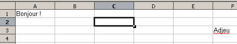
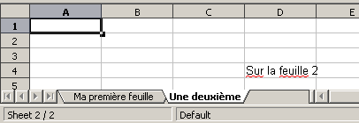

Génération de documents OpenOffice 2.0 (Spreadsheet)
Ou comment marier PHP avec la spécification OASIS d'OpenOffice
Exemples A
Comment commencer ?
C'est très simple, procédons donc pas-à-pas. D'abord, on instancie la classe.
<?php
// 1.
require_once ('calc/classes/OpenOfficeSpreadsheet.class.php');
// 2.
$calc = new OpenOfficeSpreadsheet('exemple_a.ods');
?>
En 1, on inclu la classe principale (ne pas se tromper dans le chemin, mais ça, ça te regarde ;). En 2, on créé un nouvel objet OpenOfficeSpeadsheet, avec un nom. On peut mettre C:/essai.ods si on désire spécifier son emplacement lors de l'enregistrement. Sinon, le fichier sera généré au même emplacement que le script PHP.
A noté qu'on peut choisir de ne pas enregistrer le fichier automatiquement sur le disque, mais plutôt de le télécharger (et par conséquent de laisser le choix à l'utilisateur de le mettre où il le veut).
Ajouter une feuille
Le document est créé, mais il est vide. Il s'agit donc de créer une première feuille. On peut créer autant de feuille que l'on veut. Ici, on va en faire deux (pour le fun).
<?php
// 1.
require_once ('calc/classes/OpenOfficeSpreadsheet.class.php');
$calc = new OpenOfficeSpreadsheet('exemple_a.ods');
// 2.
$feuille_1 = $calc->addSheet('Ma première feuille');
$feuille_2 = $calc->addSheet('Une deuxième');
?>
En 1, on créé le document (voir ci-dessus pour explications). En 2, on ajoute deux feuilles, à savoir $feuille_1 et $feuille_2. A la méthode, on lui passe le nom de la feuille.
Remplir des cellules avec du texte
A présent, c'est à toi de jouer ! En théorie, il y'a plus ou moins tout ce qu'il faut pour faire pas mal de choses. On va voir comment insérer du texte dans la première feuille.
<?php
// 1.
require_once ('calc/classes/OpenOfficeSpreadsheet.class.php');
$calc = new OpenOfficeSpreadsheet('exemple_a.ods');
$feuille_1 = $calc->addSheet('Ma première feuille');
$feuille_2 = $calc->addSheet('Une deuxième');
// 2.
$cell_1 = $feuille_1->getCell(1, 1);
$cell_2 = $feuille_1->getCell(6, 3);
// 3.
$cell_1->setContent('Bonjour !');
$cell_2->setContent('Adjeu');
// 4.
$cell_3 = $feuille_2->getCell(4, 4);
$cell_3->setContent('Sur la feuille 2');
// 5.
$calc->output();
?>

En 1, on instancie la classe et on créé deux feuilles. En 2, on récupère deux cellules, à savoir A1 et F3, de la feuille 1. Le premier chiffre correspond à la colonne, le second à la ligne. Malheureusement oui, pour l'instant, la colonne est en numérique. On verra plus loin comment contourner mollement (c'est moche, il faut que je trouve autre chose) ce problème.
Ensuite, en 3, on insère du contenu dans chacune des cellules de la feuille 1. On va chercher en 4 la cellule D4 de la feuille 2 et on lui met un contenu.
Enfin, en 5, on envoie le fichier en téléchargement. Ici pour voir le résultat.
Dernières mise-à-jour
La dernière mise à jour date du 7 mai 2006. La génération de feuilles de calcul est plutôt stable.
Par TafelExemple A
Les bases. Comment créer une feuille et gérer basiquement les cellules.
Par TafelExemple B
Les actions sur les cellules. Entre contenu et couleur de fond, on trouve tout c'qu'on veut!
Par TafelAstuces
Deux ou trois bidouilles marrantes pour s'économiser du code et/ou de la prise de tête.
Par TafelOpenOffice Generation PHP
Le 7 mai 2006, Tafel. Optimisé pour Mozilla Firefox